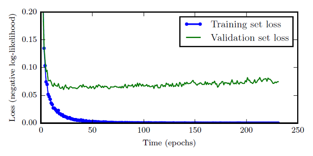

Guide to Locating Accuracy Problems

This guide aims to provide algorithm developers with a brief and concise guidance for locating accuracy problems. For details about how to locate and optimize accuracy problems, see Accuracy Problem Locating and Optimization Guide.
This guide is applicable to the scenario where the training script can run until the training is complete and the loss value of each training step is output. If an error occurs during training, rectify the fault based on the error information.
This guide assumes that you are capable of independently compiling deep learning training scripts and have a basic understanding of deep learning and MindSpore.
Two common methods are provided for preliminarily locating accuracy problems: checklist-based locating and symptom comparison-based locating. In practice, you use only one method. The checklist-based locating method is recommended. If a benchmark script (reference script for MindSpore script development) is available, you can use the symptom comparison-based locating method.
Checklist-based Locating Method
When an accuracy problem occurs, you can refer to the following checklist to check the accuracy. If any suspicious problems are found in the checklist, you should try to rectify the problems by referring to Accuracy Problem Locating and Optimization Guide. If no suspicious problem is found after the checklist is used, you can use other methods to locate and optimize accuracy problems or refer to Accuracy Problem Locating and Optimization Guide. If you suspect that the accuracy problem is related to the MindSpore framework, ensure that the problems listed in the checklist do not exist before seeking help. For details about how to seek help, see the end of this document.
Instructions for Using the Checklist
You are advised to copy the following checklist to a Word document, check the items one by one, fill in the conclusion in the Word document, and save the document. For complex problems, you are advised to paste related screenshots and code into the conclusion. The information can help us better determine your problem when you seek help from us.
In the “Check method” field, you can select an equivalent or more effective check method based on the actual situation.
In the “Conclusion” field, enter “Problem found”, “No problem”, or “N/A” based on the actual situation.
Common Dataset Problems
ds.01 The dataset contains too many missing values
Check method:
Missing values usually exist in the form of NaN and +/-Inf. Missing value symbols used in different datasets are different. When checking missing values, you need to determine the method of representing missing values in each field, and then use a counter to count the number of missing values in each field. In this way, you can understand the missing values in the dataset.
If the data contains missing values that are not processed, enter “Problem found” in the “Conclusion” field. In this case, you need to take proper measures to handle the problem. For details about the handling methods, see Accuracy Problem Locating and Optimization Guide.
Conclusion:
Enter here.
ds.02 The label of the data is incorrect
Check method:
Use the sampling method to check whether the data labels are correct. This check is not required in scenarios without labels (for example, unsupervised learning).
If there are not many labels, you are advised to perform hierarchical sampling on the training data based on all labels to ensure that at least one sample is selected for each label. Then, check the selected samples. Select a proper sampling probability to ensure that the number of samples is about 50.
If there are a large number of labels, you are advised to randomly select 20 labels. Then, the training data is sampled based on the selected label to ensure that at least one sample is selected for each label. Select a proper sampling probability to ensure that the number of samples is about 50.
After obtaining the samples, check whether the data labels are correct in a proper visualization mode. For example, image data can be checked after being drawn using matplotlib, and text data can be directly printed on the screen for check.
Conclusion:
Enter here.
ds.03 The number of samples of each category in the dataset is unbalanced or the training samples of some categories are insufficient
Check method:
A counter is used to count the number of samples of each category, and then the standard deviation and bar chart are used to determine whether the number of samples is balanced. Generally, supervised deep learning algorithm can achieve acceptable accuracy in the case of 5000 labeled samples of each class. When there are more than 10 million labeled samples in the dataset, the model performance will exceed that of humans.
Conclusion:
Enter here.
ds.04 The dataset in the training environment is different from the standard dataset
Check method:
You are advised to check whether the datasets copied from the training environment are consistent with the same source dataset. Especially in parallel training, you are advised to check whether datasets are correctly stored on each machine. When using a known dataset, ensure that the dataset used in the training environment is consistent with the known dataset. The check procedure is as follows:
Check that the dataset file list of the ported model is the same as that of the benchmark model. The file list in the training environment should be recorded based on the actual training process. For example, record the dataset file list when creating a dataset in the training script.
Obtain the MD5 verification codes of the reference dataset file and the actual dataset file based on the file list. Ensure that the two groups of verification codes are the same.
Conclusion:
Enter here.
Common Data Processing Algorithm Problems
dp.01 Data is not normalized or standardized
Check method:
Check the data processing code and ensure that necessary normalization or standardization is performed in the data processing code. Normalization or standardization refers to mapping data to a same scale. Common operation methods include resize, rescale, normalize, and the like.
For example:
Take the ResNet50 model in ModelZoo as an example. It can be seen that the model is normalized in the data processing code. Therefore, the conclusion is “No problem.”
trans += [
C.Resize((224, 224)),
C.Rescale(1.0 / 255.0, 0.0),
C.Normalize([0.4914, 0.4822, 0.4465], [0.2023, 0.1994, 0.2010]),
C.HWC2CHW()
]
Conclusion:
Enter here.
dp.02: The data processing mode is incorrect during inference
Check method:
Check the data processing code of the training script and that of the inference script. Generally, the processing logic of the two scripts must be the same. It should be noted that some random operations (such as random rotation and random cropping) are generally used only for training sets. Random operation is not required during inference.
For example:
Take the ResNet50 model (CIFAR10 dataset) in ModelZoo as an example. The training script and inference script reuse the same data processing function. The do_train parameter is used to distinguish the training mode from the inference mode. Check the code. It is found that do_train affects only the two random data processing APIs. It is used in training mode and is not used in inference mode. Other processing logic is the same. Therefore, the conclusion is “No problem.”
if do_train:
trans += [
C.RandomCrop((32, 32), (4, 4, 4, 4)),
C.RandomHorizontalFlip(prob=0.5)
]
Conclusion:
Enter here.
dp.03 Datasets are not shuffled during training
Check method:
Check whether the shuffle function is enabled in the data processing code of the training script. Shuffling the data sequence helps avoid overfitting. If shuffling is not performed, or shuffling is insufficient, a model is always updated in a same data sequence, which severely limits selectability of a gradient optimization direction. As a result, fewer convergence points can be selected and overfitting is easy to occur. The shuffle function can be enabled in any of the following ways:
When creating a dataset, set shuffle to True. For example, the shuffle parameter in mindspore.dataset.Cifar10Dataset.
The shuffle method, for example, mindspore.dataset.Cifar10Dataset.shuffle, is used during data processing.
If the Sampler is used, you can also enable the shuffle function provided by the Sampler. For example, the shuffle parameter in mindspore.dataset.PKSampler.
For example: Take ResNet50 (CIFAR10 dataset) in ModelZoo as an example. The shuffle parameter is set to True when the dataset is created. Therefore, the conclusion is “No problem.”
if device_num == 1:
data_set = ds.Cifar10Dataset(dataset_path, num_parallel_workers=8, shuffle=True)
else:
data_set = ds.Cifar10Dataset(dataset_path, num_parallel_workers=8, shuffle=True,
num_shards=device_num, shard_id=rank_id)
Conclusion:
Enter here.
dp.04: When data padding is involved, the padding mode is incorrect
Check method:
Check whether the position, mode, and value of data padding are consistent with the design. Data padding is to fill fake data so that the size and shape of the data meet the training requirements.
Conclusion:
Enter here.
dp.05: The multi-node fragmentation mode is incorrect during parallel training
Check method:
The data preprocessing may shard datasets to different nodes based on file name or number of files. This results in large differences between the user model and benchmark model or even files sharded repeatedly to a single node, as the file read API sorts file names differently on different nodes.
Conclusion:
Enter here.
Common Hyperparameter Problems
hp.01 The learning rate is too high or too low
Check method:
The range of learning rate can be preliminarily determined through a simple experiment. Specifically, select a large learning rate range (for example, from 0 to 0.5), and train several epochs (for example, 10). During training, the learning rate is increased linearly (or exponentially) iteratively, a relationship curve between the accuracy and the learning rate is obtained, as shown in the following figure. Pay attention to learning rates corresponding to parts whose accuracy starts to increase and does not increase in the curve. A learning rate when the accuracy starts to increase may be used as a lower limit of the learning rate, and a learning rate when the accuracy does not increase is used as an upper limit of the learning rate. A learning rate between the upper limit and the lower limit may be considered reasonable.

Figure 1 Relationship between the learning rate and accuracy. This curve is obtained through training of eight epochs and referenced from (Smith, 2017)
Conclusion:
Enter here.
hp.02 The number of epochs is too large or too small
Check method:
An epoch is a process of training a model using all data in a training set. The number of epochs indicates the number of times that the preceding process is performed. The loss curves of the training set and test set during training help determine the proper number of epochs. Generally, as the training is performed, the loss of the training set decreases continuously, and the loss of the validation set decreases first and then increases slowly. You need to select the epoch with the minimum loss of the validation set as the optimal number of epochs for training.

Figure 2 Relationship between the epochs and loss. The blue curve is the loss curve of the training set, and the green curve is the loss curve of the validation set.
Conclusion:
Enter here.
hp.03 The batch size is too large
Check method:
If the batch size is too large, the accuracy is reduced. Generally, 32 is a secure value, and 64, 128, and 256 are worth trying. You are advised to perform training on a small batch size and dataset to obtain the accuracy baseline. During training with a large batch size, pay attention to the accuracy change. If the accuracy is far away from the baseline, the batch size may be large. (The learning rate may not match the batch size. Generally, when the batch size is increased, the learning rate needs to be increased accordingly to keep the ratio of the batch size to the learning rate constant.)
Conclusion:
Enter here.
FAQs About API Usage
api.01 Differences between MindSpore APIs and other framework APIs are not noticed when using APIs
Check method:
MindSpore APIs are different from APIs of other frameworks. If the benchmark script is available, pay attention to the following:
Check whether the parameter initialization mode of the MindSpore script is the same as that of the benchmark script.
Check whether the default parameter values of some APIs in MindSpore and the parameter meanings are different from those in other frameworks.
Here we list some important differences for you to check:
By default, the Conv2d API of MindSpore does not have bias (has_bias = False), but the Conv2d API of PyTorch has bias. By default, the weight of the Conv2d API is Normal (0.0, 0.01). This initialization mode is different from that of PyTorch (Uniform) and TensorFlow (Uniform). For the comparison with PyTorch, see Function Differences with torch.nn.Conv2d
For the DropOut API of MindSpore, this parameter indicates the retention probability (keep_prob). For the DropOut API of PyTorch, this parameter indicates the drop probability.
The default momentum value in BatchNorm2d of MindSpore is different from that of PyTorch. The default value is 0.1 in PyTorch and 0.9 in MindSpore. For the comparison with PyTorch, see Function Differences with torch.nn.BatchNorm2d
For details about API differences, see PyTorch API Mapping.
For example:
Take ResNet50 (CIFAR10 dataset) in ModelZoo as an example. According to the API difference list, the following APIs that may be different are used in the script: mindspore.nn.Conv2d and mindspore.nn.BatchNorm2d.
When Conv2d is used in the script, the weight_init mode is explicitly specified. When BatchNorm2d is used in the script, the momentum parameter is explicitly specified. The values of these parameters are consistent with the design. Therefore, the conclusion is “No problem.”
Conclusion:
Enter here.
api.02 The mode is not set based on the training or inference scenario when the API is used
Check method:
In the training script, this check is required when the model.train API is not used for training.
In the evaluation script, this check is required when the model.eval API is not used for evaluation.
In the inference script, this check is required when the model.predict API is not used for inference.
Determine whether the scenario is a training scenario and set cell.set_train() before calling a model. In the training scenario, call cell.set_train(True). In other scenarios, call cell.set_train(False).
Note:
For the BatchNorm API in the mindspore.nn namespace, you are advised to retain the default value None of the use_batch_statistics parameter. When use_batch_statistics is set to the default value None, the BatchNorm API determines whether to update the moving mean and moving variance parameters in each training step based on the mode specified by cell.set_train(). When the mode specified by cell.set_train() is True, the preceding two parameters are updated. When the mode specified by cell.set_train() is False, the preceding two parameters are not updated. If use_batch_statistics=True is set, the BatchNorm API updates the moving mean and moving variance parameters even if cell.set_train(False) is set to indicate that the current scenario is not a training scenario.
For example:
Take ResNet50 (CIFAR10 dataset) in ModelZoo as an example. It uses the model.train and model.eval APIs in train.py and eval.py for training and inference, respectively. In infer.py, net.set_train (False) is explicitly called before inference. Therefore, the conclusion is “No problem.”
Conclusion:
Enter here.
Common Computational Graph Structure Problems
To check a computational graph structure, save the computational graph to a summary file by referring to Collecting Summary Record, and then use MindSpore Insight to visualize the computational graph.
Conclusion:
Enter here.
cg.02 The weight is improperly frozen
Check method:
Check whether the freezing status of the weight is consistent with the design based on the code. There are two ways to freeze weights, both of which have obvious features in the code.
Method 1: Set requires_grad in Parameter to False.
Method 2: Use Stop Gradient to prevent the gradient from continuing to propagate backward. After all gradients that affect the weight are blocked, the update of the weight is actually blocked.
Conclusion:
Enter here.
cg.03 The node is improperly connected
Check method:
On the MindSpore Insight computational graph page, check important model elements from top to bottom to ensure that these elements are displayed in the computational graph. For example, to check whether LeNet5 has node connection errors, you can expand the computational graph displayed on the MindSpore Insight computational graph page layer by layer to ensure that important elements such as conv, relu, and fc exist in the computational graph and are correctly connected. The computational graph in the Gradients namespace is generated through MindSpore automatic differentiation and can be ignored during the check.
Conclusion:
Enter here.
cg.04 The loss function is incorrect
Check method:
When using the built-in loss function of MindSpore, check whether the type of the used loss function complies with the design. When using the customized loss function, check whether the code implementation of the loss function complies with the design. If necessary, manually implement a NumPy version and use the same input to check whether the output of the loss function of the MindSpore version is consistent with that of the NumPy version.
Conclusion:
Enter here.
Common Weight Initialization Problems
wi.01 The initial values of all weights are 0
Check method:
Check the weight initialization mode (excluding the optimizer status) in the script (including the explicitly specified initial weight value and the default weight initialized in APIs in some mindspore.nn namespaces) to see whether the weight is initialized to all 0s. Note that some parameters, such as bias, should be initialized to all 0s.
Conclusion:
Enter here.
wi.02 The loaded pre-training model is incorrect
Check method:
When loading a pre-trained or backbone model, ensure that the correct weight is loaded. When using backbone models such as ResNet, load the pre-trained model that matches the design and application scenario. If there is a benchmark script, ensure that the weight of the loaded pre-training model is the same as that of the pre-training model that can be used by the benchmark script.
Conclusion:
Enter here.
Common Mixed Precision and Overflow Problems
When you run a script on the Ascend backend or use the mixed precision function, you are advised to check the items in this section to determine whether mixed precision and overflow problems exist.
mp.01 Overflow occurs during training
Check method: When the mixed precision or the Ascend AI processor is used for training, you are advised to check whether overflow occurs.
When using the GPU, you can perform the overflow check through the check tensor overflow watchpoint in the debugger.
After the overflow problem is found, find and analyze the first overflow node. (For Ascend overflow data, find the node with the smallest timestamp based on the timestamp in the file name. For GPU overflow data, find the first node in the execution sequence.) Determine the overflow cause based on the input and output data of the API.
The common solutions to the overflow problem are as follows:
Enable dynamic loss scale or set a proper static loss scale value. For details, see LossScale. Note that when the static loss scale in the GPU scenario is directly used for Ascend training, unexpected frequent overflow may occur, affecting convergence. After the loss scale is enabled, you may need to perform multiple experiments to adjust the init_loss_scale (initial value), scale_factor, and scale_window of loss scale until there are few floating-point overflows during training.
If the overflow problem has a key impact on the accuracy and cannot be avoided, change the corresponding API to the FP32 API (the performance may be greatly affected after the adjustment).
Conclusion:
Enter here.
mp.02 During mixed precision training, the loss scale is not correctly set
Check method:
When mixed precision is used. You can use the default parameter values of DynamicLossScaleManager or FixedLossScaleManager for training. If there are too many overflow steps and the final accuracy is affected, adjust the value of loss_scale based on the overflow phenomenon. If gradient overflow occurs, decrease the value of loss_scale (by dividing the original value of loss_scale by 2). If gradient underflow occurs, increase the value of loss_scale (by multiplying the original value of loss_scale by 2). In most cases, training on the Ascend AI processor is performed with mixed precision. The computation feature of the Ascend AI processor is different from that of the GPU mixed precision. Therefore, you may need to adjust the value of the LossScaleManager hyperparameter to a value different from that on the GPU based on the training result to ensure the precision.
Conclusion:
Enter here.
mp.03 The application sequence of loss scale and gradient clip is incorrect
Check method:
Gradient clip forcibly adjusts the gradient to a smaller value when the gradient is greater than a threshold. Gradient clip has a good effect on the gradient explosion problem in RNNs. If both loss scale and gradient clip are used, perform this check. Check the code to ensure that the application object of gradient clip is the original gradient value obtained by dividing the loss scale.
Conclusion:
Enter here.
mp.04: When computing the gradient penalty, the gradient is not restored to the gradient without loss scale
Check method:
Gradient penalty is a technique that adds a gradient to a cost function to constrain the gradient length. If both loss scale and gradient penalty are used, perform this check. Check whether the entered gradient is a gradient without loss scale when computing the gradient penalty item. For example, a gradient substituted for the loss scale may be first divided by the loss scale, and then is used to compute the gradient penalty item.
Conclusion:
Enter here.
Symptom Comparison-based Locating Method
If the scripts, hyperparameters, and datasets are not modified and the same scripts are run for multiple times on the new version, the accuracy deteriorates (compared with the old version). In this case, contact us for help and provide related information.
If the benchmark script in another framework is available, you can compare the MindSpore script with the benchmark script to preliminarily locate the problem. The benchmark script refers to the script referenced by the image during MindSpore script development. That is, most details in the MindSpore script are determined by the benchmark script. In the migration scenario, the migrated script is generally a benchmark script.
The procedure is as follows:
Reproducing the Accuracy Problem
After the randomness is fixed, check whether the accuracy problem recurs.
If the problem does not recur, the accuracy problem is related to the operations performed when the randomness is fixed. You can determine the operation that causes the problem based on the sequence of unfixed network, unfixed dataset, unfixed initialization weight, unfixed hyperparameter, and unfixed global random number seed. In this way, you can determine the cause of the problem and optimize the training script accordingly.
If the problem occurs occasionally in a random or determined step, or occurs inevitably in a random step, check whether all random factors are fixed based on the check result of the loss curve in the preceding steps.
If the problem occurs inevitably in a step, you can try to locate the problem in the first or second step to facilitate subsequent symptom comparison and problem locating. Specifically, assuming that the problem occurs in the Dth step, try to save a checkpoint of the (D-1)th step, which is marked as checkpoint (D-1), enable the dataset to skip the corresponding data, and then load checkpoint (D-1) to train. In this case, the problem occurs in the second step (the initial step is recorded as the first step).
Comparison with the Benchmark Script
The comparison with the benchmark script is a great help to locate the accuracy problem. Compare the MindSpore script with the benchmark script to check whether errors exist in the MindSpore script and fix the randomness of the benchmark script so that the loss curve can be compared with that in the MindSpore script.
You are advised to perform the check in simulation mode and compare the results line by line. Run the training scripts with the same parameters. During the execution, ensure that the logic of the MindSpore script is the same as that of the benchmark script and the meanings of the running parameters are consistent. Generally, the confirmation scope is limited to the code compiled by the developer (the code of the deep learning framework does not need to be enabled). During the implementation, pay attention to the following aspects:
Ensure that the global random number seeds in the benchmark script are fixed.
Check whether the hyperparameters are consistent and fix the hyperparameters in the benchmark script.
Check whether the dataset and data processing are consistent, and fix the data processing method and data sequence in the benchmark script.
Check whether the network structures are consistent and delete random APIs from the network.
Check whether the weight initialization is consistent. You are advised to load the checkpoint file with the same value for the MindSpore script and benchmark script. If the network structures are the same, the checkpoint file of a framework can be converted into the checkpoint file of another framework by simply replacing the weight name.
It is strongly recommended that the mixed precision be enabled in the benchmark script. If an accuracy problem occurs after the mixed precision function of the benchmark script is enabled, the algorithm needs to be optimized to ensure that the algorithm can converge at the mixed precision.
During the comparison, you need to compare the parameters written in the script and pay attention to the default values of the parameters that are not written in the script. For example, for the Conv2d API of MindSpore, has_bias is set to False by default and Normal (0.0, 0.01) is used to initialize the weight. For the Conv2d API of PyTorch, has_bias is set to True by default and the initialization mode is different. For details about the API differences between MindSpore and PyTorch, see PyTorch API Mapping.
After the preceding comparison and fixing processes are executed, some MindSpore scripts are inconsistent. After the inconsistency is rectified, the accuracy problem is solved. If the inconsistency is rectified but the problem persists, run the MindSpore script and benchmark script with the same dataset and parameters to compare the loss.
If the loss of the first step is different, the two scripts may be inconsistent or the randomness is not fixed.
If the loss of the first step is the same and the loss of the second step is different, inconsistency occurs in the backward computation or weight update of the first step, or in the forward computation of the second step. You need to check whether the optimizer and input data of the MindSpore script are consistent with those of the benchmark script. If the MindSpore script is consistent with the benchmark script and the randomness is fixed, collect related information and contact us for help.
If the loss values of the first and second steps are the same, you can further compare the entire loss curve. If the entire loss curve is basically the same, there is a high probability that the benchmark script has an accuracy problem. If the entire loss curve has a bifurcation, the bifurcation location is the key to locate the accuracy problem.
Note that some APIs on the Ascend AI processor do not support FP32 implementation. Therefore, when comparing MindSpore on the Ascend AI processor with MindSpore on the Ascend AI processor, you need to enable the mixed precision in the benchmark script to determine the upper limit of the precision when the mixed precision is enabled.
Seeking Help
Use either of the preceding methods to locate the problem. If no doubtful point is found, the script does not have obvious problems. In this case, perform optimization by referring to Accuracy Optimization Suggestions. If you find any doubt based on symptom comparison, determine whether you need to locate the problem by yourself or contact MindSpore for help based on the information in the locating method. If any doubt or problem is found in the checklist, locate the problem by referring to the Accuracy Problem Locating and Optimization Guide.
If you encounter an accuracy problem and want to seek help from MindSpore, provide related materials to help us better determine and solve your problem. You are advised to provide the following materials:
If you use a checklist, you are advised to add the conclusions of the checklist to the attachment.
If you use the symptom comparison-based locating method, you are advised to take screenshots of the symptom (including the MindSpore script and benchmark script) and fix the random MindSpore script and benchmark script, add the minimum dataset and running environment (for example, MindSpore version, GPU or Ascend) required for reproducing the problem to the attachment.
You are advised to add the executable script, minimum dataset, and running environment description (for example, MindSpore version, GPU or Ascend) that can reproduce the problem to the attachment.
Link to create issues.
References
Smith, L. N. (2017). Cyclical learning rates for training neural networks. Proceedings - 2017 IEEE Winter Conference on Applications of Computer Vision, WACV 2017, 464–472.